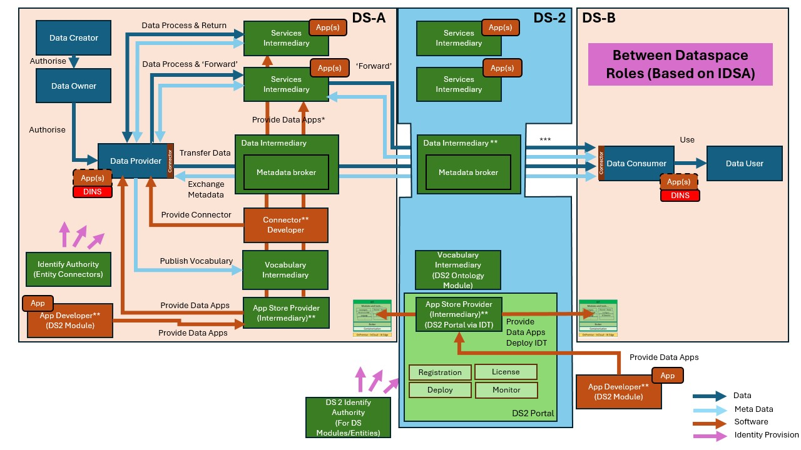
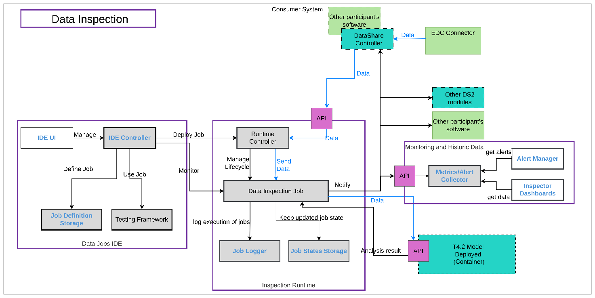

Data Inspector (DINS)
| Project Links |
|---|
| Software GitHub Repository https://github.com/ds2-eu/dins_module.git |
| Progress GitHub Project https://github.com/orgs/ds2-eu/projects/28 |
General Description
The Data Inspection Module (DINS) facilitates the configuration and deployment of processes for real-time data analysis, ensuring data quality and compliance with thresholds set by the parties involved. It performs several key functions: generating notifications based on the values of the exchanged data, executing reactions such as sending requests and notifications to external tools, and integrating with models developed to enhance its capabilities. It is a complement to the Data Share Controller which focuses on control information with both modules using the Data Interceptor.
The Data Inspection is responsible for analysing the data provided and/or consumed by participants, ensuring the quality of the data shared amongst them. For example, a consumer can use DINS to set up analysis jobs that define rules for data validation. This includes establishing thresholds for specific data values; when these thresholds are exceeded, issues are generated and recorded for monitoring. Additionally, the DINS module can trigger notifications to other modules and components when issues are detected. For instance, it can notify the Data Share Controller Module, which may respond by blocking data sharing if certain limits are reached.
Architecture
The figure below represents the module fit into the DS-DS environment.

The figure below represents the actors, internal structure, primary sub-components, primary DS2 module interfaces, and primary other interfaces of the module.

Component Definition
This module has the following subcomponent and other functions: * Data Jobs IDE: This group of components is shared with the T4.1 Policy Enforcement Modules. Some of them will be developed based on existing technology, specifically the Dataflow component of the Onesait Platform open-source product. While T4.1 Policy Enforcement focuses on defining and executing data transformation jobs, the Data Inspection module will enhance the current capabilities of Dataflow to include data inspection, monitoring, and notifications. T6.2 will lead this component development, and T4.1 will be built on the improved version from T6.2. Therefore, T4.1 has a dependency on T6.2, but the opposite is not true. * IDE UI: This graphical user interface allows users to define Data Inspection Jobs for monitoring data and triggering notifications and alerts. For example, it can evaluate values against specified thresholds. This component is based on the existing INDRA software, with updates needed to support new features for DS2. * IDE Controller: This component manages Data Inspection Jobs during design time and oversees their deployment and monitoring at runtime. It is based on current INDRA software but requires significant upgrades to split the tool into the IDE component and the Runtime component (potentially several). * Job Definition Storage: This component stores definitions of Data Inspection Jobs, based on INDRA software, with extensions planned to improve version control of the definitions. The definitions are created through a graphical user interface, enabling users to design Data Inspection Jobs as data pipelines using a drag-and-drop approach. Each data pipeline will include, at a minimum, the configuration of data sources (e.g., data formats) and the rules for inspecting the data (e.g., detecting specific fields and value thresholds). In the end, each data pipeline definition is a JSON document and a set of parameters. They will be stored in a distributed persistence engine. * Testing Framework: This component will include test definitions and the storage of small datasets for automatic testing. This component will enable users to define automated tests that are executed to validate Data Inspection Jobs before deployment. * Inspection Runtime: * Runtime Controller: This component will manage the execution of Data Inspection Jobs during runtime. It will define the interface for integrating job execution with external components and will handle the job lifecycle: deployment, upgrade, removal, start, and stop. * Data Inspection Job: This component represents the runtime execution of a data inspection definition. Each type of data inspection supported will require a Data Inspection Job definition. One instance of this component will be created for each Data Inspection Job needed at runtime, even for the same definition. The creation of these instances will be managed by the Runtime Controller. The Data Inspection Job includes the definition of an SDK and interfaces that facilitate the extension of capabilities, such as supporting additional data formats. * Job Logger: This component logs all relevant information about each job execution. Based on INDRA infrastructure, it will require minimal development to adapt to changes in other module components. * Job States Storage: This component stores the states of job executions throughout their lifecycle, enabling job resumption in the event of failures during execution. Based on INDRA infrastructure, it will require minimal development. * Monitoring and Historic Data: This component will store historic metrics gathered by the analysis jobs. This set of elements will be based on the open-source stack of monitoring tools Grafana. * Metrics/Alert Collector: This component will collect all the data from the Analysis Jobs. * Alert Manager: It collects alerts, manages them by categorizing and prioritizing, and allows for the configuration of notification channels such as email and Teams. It also provides a centralized interface for tracking and managing active alerts. * Inspector Dashboard: It allows the visual analysis of the data inspected. * Model Deployed: If a complex analysis is required for data inspection, the Data Inspection Jobs will have the capability to use data models deployed with the T4.2 Data Model Development Toolkit Module. For example, a field value could be used as input in a prediction model, and based on the result, a decision can be made whether an alert should be generated. * Data Share Controller: The Data Interception part of the Data Share Controller connects data in the data pipeline with the Data Inspection. If the Data Share Controller is not present, any other software that implements the Data Inspection API can provide the data. The Data Inspection will trigger notifications to the Data Share Controller Module (and other modules or components, if required) based on rules defined by the participants. For example, “stop data sharing”. * Other DS2 Modules / Other Participant’s Software: The Module can notify any software that needs to receive these notifications, provided that the software is compatible with the notification mechanisms implemented by DINS. This capability facilitates the integration of systems that can react to data shared between participants, such as the Data Share Controller.
Screenshots

Commercial Information
| Organisation (s) | License Nature | License |
|---|---|---|
| Indra | Open Source | Apache 2.0 |
Top Features
- Connect with a large of data origins to obtain data.
- Definition of rules to analyze data transfer based on data values, data format, etc.
- Real time monitoring of the processes.
- Process template management.
- Integrated with EDC Connector.
- Capability to perform many data transformations: data format, enrich data with other sources, anonymization, masking, etc.
How To Install
TBC
Requirements
TBC
Software
TBC
Summary of installation steps
TBC
Detailed steps
TBC
How To Use
TBC
Other Information
TBC
OpenAPI Specification
TBC
Additional Links
Add in here relevant links for your module. In this section we will also add the link to the module video.
Documentation https://dataflow-docs.onesaitplatform.com/